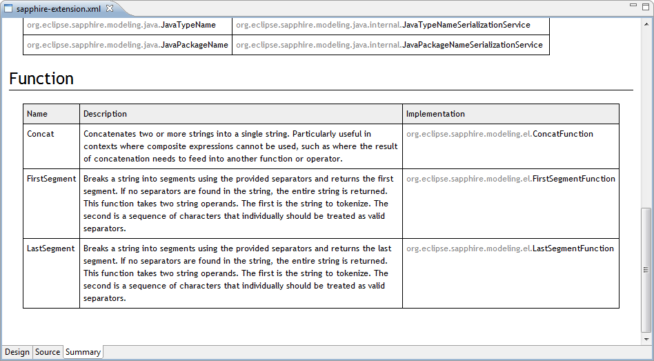

Many aspects of Sapphire can be extended by third parties.
The first step is to create sapphire-extension.xml file in your plugin's META-INF folder. If your Eclipse includes Sapphire SDK, you should see the following editor. This editor will help you define extensions without dealing with XML details.

The editor also includes a summary view, which is handy to see all of the contributions at a glance.
The rest of this document will cover writing specific extensions.
Custom functions can be contributed to Sapphire Expression Language. Functions are named using qualified form with a colon (":") separating namespace from local name. Contributed functions should be qualified with a namespace corresponding to a company, an organization or a project. Functions without a namespace are reserved for Sapphire use. New functions may be added to Sapphire framework in future releases. The best way to avoid conflicts is to use a unique namespace.
Function names are not case sensitive.
All function implementations must extend Function class.
Example
A simple function with one operand.
public class FactorialFunction extends Function
{
private static final BigInteger ZERO = BigInteger.valueOf( 0 );
private static final BigInteger ONE = BigInteger.valueOf( 1 );
public String name()
{
return "Test:Factorial";
}
public FunctionResult evaluate( FunctionContext context )
{
return new FunctionResult( this, context )
{
protected Object evaluate()
{
BigInteger x = cast( operand( 0 ).value(), BigInteger.class );
if( x.intValue() == 0 )
{
return BigInteger.valueOf( 1 );
}
else
{
BigInteger res = x;
for( BigInteger i = x.subtract( ONE ); i.compareTo( ZERO ) > 0; i = i.subtract( ONE ) )
{
res = res.multiply( i );
}
return res;
}
}
};
}
}It is important to understand that functions operate on publish-subscribe model. That is, Sapphire will not re-evaluate the function every time its result is needed. It is responsibility of the function to know when its result could change and trigger re-evaluation, which in turn will notify parties listening on the result of the function.
Most function implementations do not need to be concerned with this detail as the base class already listens on its operands and triggers re-evaluation. Only functions that bring an external source of data into the expression need to do something different.
Example
A function that counts projects in an Eclipse workspace. Note that it is a terrible implementation as it doesn't properly filter resource change events.
public class ProjectCountFunction extends Function
{
public String name()
{
return "Test:ProjectCount";
}
public FunctionResult evaluate( FunctionContext context )
{
return new FunctionResult( this, context )
{
private IResourceChangeListener listener;
protected void init()
{
super.init();
this.listener = new IResourceChangeListener()
{
public void resourceChanged( IResourceChangeEvent event )
{
refresh();
}
};
ResourcesPlugin.getWorkspace().addResourceChangeListener( this.listener );
}
protected Object evaluate()
{
return ResourcesPlugin.getWorkspace().getRoot().getProjects().length;
}
public void dispose()
{
super.dispose();
ResourcesPlugin.getWorkspace().removeResourceChangeListener( this.listener );
}
};
}
}